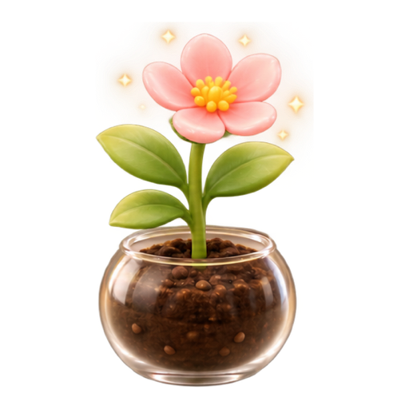
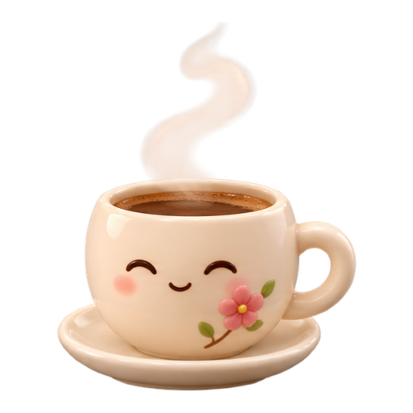
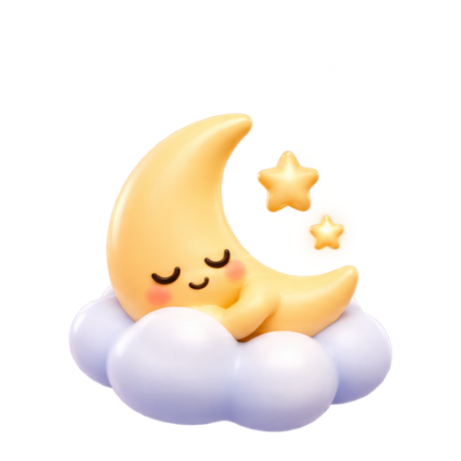
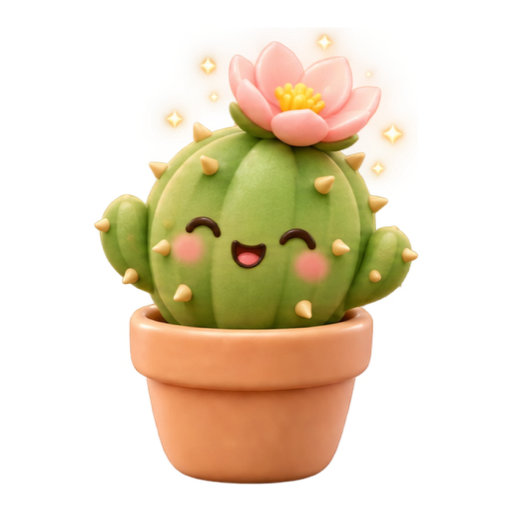

Lives in your menu bar.
The time left sits next to the clock. Pause, hide the panel or end the session right from the menu.
Mellow sits at the edge of your screen with one task and a timer. Stay with it, and something small grows.
For macOS 26 Tahoe and later
Nothing to set up, nothing to manage. Mellow does one small thing and stays out of your way.
Type what you’re working on, pick 15, 25 or 45 minutes, and start.
Mellow floats above your apps, small and quiet. Your companion grows a little with every quarter of the session.
Finish the session and a flower joins today’s count. Take a five-minute break if you like — it never starts on its own.
Seven small companions. Each one settles in while you focus and wakes up when you’re done.

Grows, then blooms
Naps, then wakes up
Glows, then rests
Dozes, then perks up

Steams, then cools

Drifts on a cloud

Grows a pink bloom
Switch anytime in Settings or by right-clicking your companion. Your session keeps going.
Ending early asks once, then lets you go. Your companion is fine, and the flower waits for the next session.
Liquid Glass, the menu bar, Dark Mode and the keyboard. Mellow behaves like it came with your Mac.
The time left sits next to the clock. Pause, hide the panel or end the session right from the menu.
Press ⌘M for a tiny capsule with just the time.
Follows your Mac’s appearance, glass and all.
Space starts and pauses. ⌘. ends the session. ⌘, opens Settings.
No account and no sign-in. Your tasks and flowers stay on your Mac.
VoiceOver labels, visible focus rings, Reduce Motion and Reduce Transparency.
Floats above your apps on every Space. Turn off Stay on Top if you prefer.
Twenty-five minutes, one task, one small flower.
Download for MacFor macOS 26 Tahoe and later